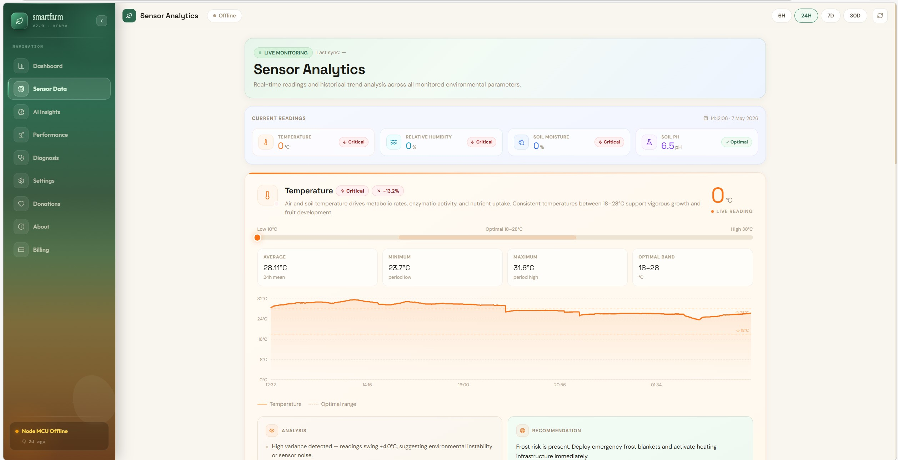

Founder & CEO, DravTech
Software Developer
Data Analyst
Political & Communication Analyst
AI & Machine Learning Enthusiast
I am an innovative technology entrepreneur, software developer, data analyst, and Economics & Statistics graduate passionate about building technology solutions that solve real-world challenges.
As the Founder and CEO of DravTech, I lead the development of digital platforms across education, healthcare, agriculture, and business sectors.
My work focuses on artificial intelligence, machine learning, software engineering, digital transformation, entrepreneurship, research, and innovation.
I am bilingual in English and Swahili and possess strong leadership, communication, stakeholder engagement, and analytical skills.
Bachelor of Economics and Statistics
Intermediate Python Programming
Machine Learning & AI
Certificate in Information Technology
Leading software development, innovation, project management, and business strategy.
Stakeholder engagement, communication, customer support, and relationship management.
Successfully managed and operated multiple business ventures.
Exhibited technology innovations during the main showcase day.
Participated in innovation and entrepreneurship activities.
Showcased digital innovations and emerging technologies.